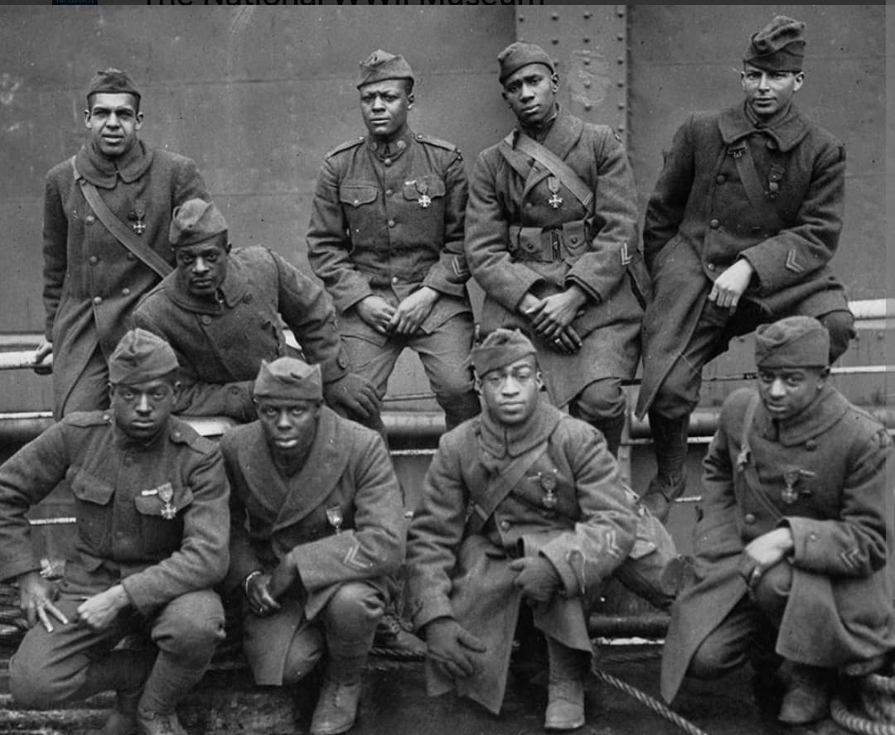
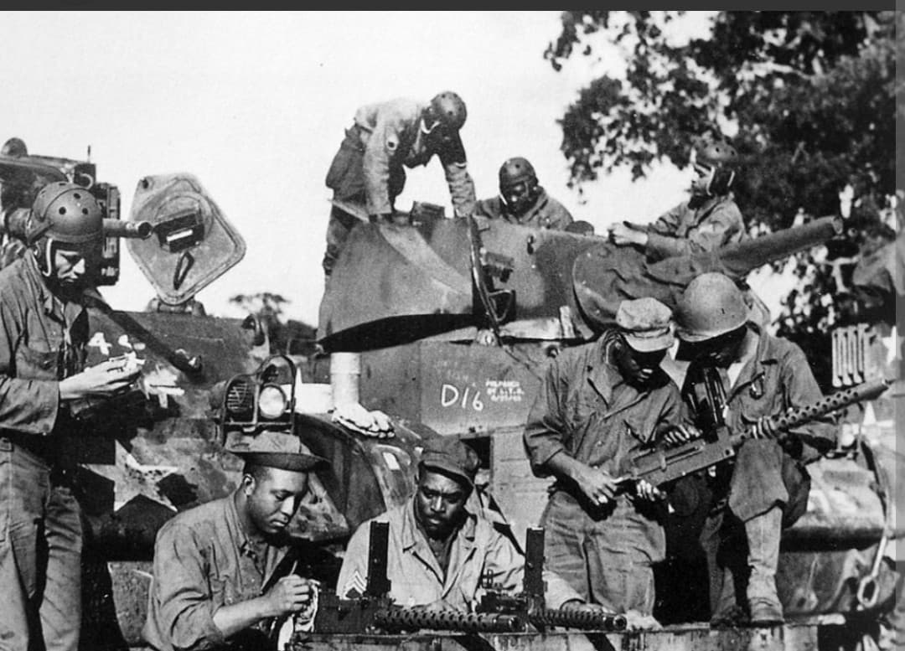
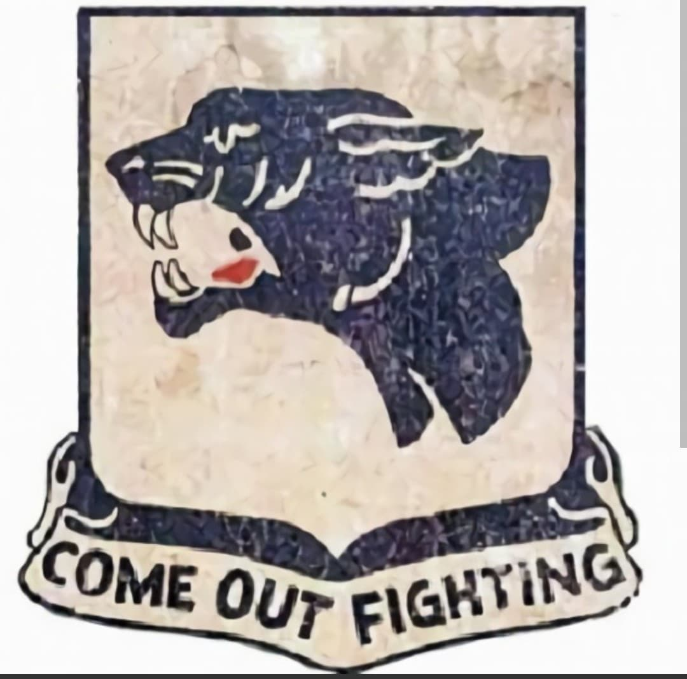
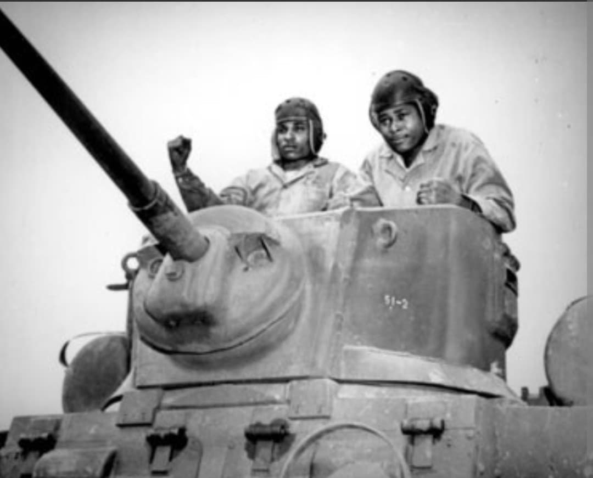

Surnommé les « Black Panthers » en référence à l’insigne d’épaule représentant une panthère noire bondissante et à leur devise « Come Out Fighting » (« Sortez pour combattre »), le 761st Tank Battalion est le premier bataillon de chars composé de soldats afro-américains à avoir combattu en première ligne au sein de l’armée des États-Unis durant la Seconde Guerre mondiale.
Rattaché à la 3e Armée du général George S. Patton, le bataillon s’illustre pendant 183 jours de combats ininterrompus à travers la France, la Belgique, le Luxembourg, l’Allemagne et jusqu’en Autriche.
Activé le 1er avril 1942 à Camp Claiborne (Louisiane), le 761st Tank Battalion voit le jour dans le cadre d’une expérimentation militaire destinée à évaluer les capacités des soldats noirs au sein des troupes blindées. À cette époque, la doctrine officielle de l’US Army juge les troupes afro-américaines inaptes au combat mécanisé.
L’unité est soumise à près de deux années d’entraînement intensif sur chars légers M5 Stuart et chars moyens M4 Sherman, notamment à Fort Hood (Texas), dans un climat de ségrégation raciale quotidienne. Parmi les officiers qui forment les rangs du bataillon figure le lieutenant Jackie Robinson, qui deviendra après la guerre le premier joueur afro-américain de la Ligue majeure de baseball (MLB).

Débarqué en France à Omaha Beach en octobre 1944, le 761st Tank Battalion est affecté à la 3e Armée américaine commandée par le général George S. Patton. Bien qu’initialement sceptique quant à l’emploi de troupes noires au combat, Patton manque cruellement de blindés et accueille le bataillon par un discours resté célèbre :
Dès le 7 novembre 1944, le bataillon est jeté dans la bataille en Lorraine (secteurs de Moyenvic, Vic-sur-Seille et Morville-lès-Vic) où il perce les défenses allemandes sous une pluie battante et des tirs d’artillerie intenses.

En décembre 1944, lors de la contre-offensive allemande dans les Ardennes, le 761st Tank Battalion est dépêché d’urgence vers le nord pour dégager la ville encerclée de Bastogne et repousser les divisions Panzer en Belgique (notamment à Tillet).
Au printemps 1945, les Black Panthers franchissent le Rhin, percent les fortifications de la ligne Siegfried et avancent au cœur de l’Allemagne jusqu’à Steyr en Autriche, où ils opèrent leur jonction avec les troupes soviétiques de l’Armée rouge en mai 1945. Durant cette avancée, ils participent également à la libération du camp de concentration de Gunskirchen (annexe de Mauthausen).

En 183 jours consécutifs de combat en première ligne, le 761st Tank Battalion affiche un bilan militaire exceptionnel :
En raison des préjugés raciaux de l’époque, le bataillon dut attendre 1978 (sous la présidence de Jimmy Carter) pour recevoir officiellement la Presidential Unit Citation, et le sergent Ruben Rivers, tué au combat en Lorraine en novembre 1944, ne reçut la Medal of Honor à titre posthume qu’en 1997.
Page du Musée HOP WW2 – Section États-Unis & Unités Célèbres